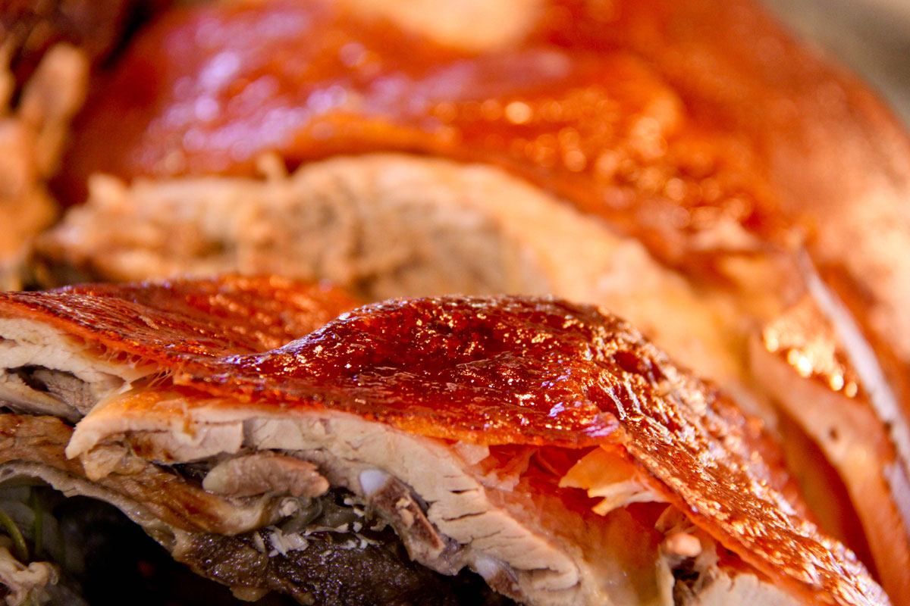

CEBU LECHON. The roasted pig of Cebu was declared by renowned chef, author and television host Anthony Bourdain as the "best pig in the world." You should never leave Cebu without trying it. (Photo by Boboi Costas)
menu
This mobile guide is a collaboration among the Sinulog Foundation, Smart Communications Inc. and InnoPub Media.
